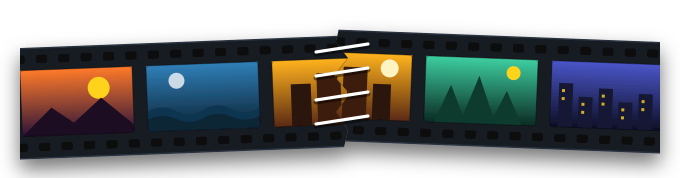

Rip it from the web. Stitch it into one.
Paste a link from YouTube, Vimeo, X, TikTok, Twitch, Reddit, SoundCloud or any of 1,800+ sites. Pick a quality, and it lands in your Downloads folder, ready to cut in Stitch.
Reads the page and lists every stream. Nothing downloads until you pick.
Reading…
Drop video clips to start a cut
MP4 · MOV · WebM · MKV. Everything is read right here in your browser.
Space playI O mark in / outB split at the playheadS preview whole cut? all shortcuts
0:00.00/ 0:00.00
Clips land here in name order. Drag to reorder, drag the edges to trim.